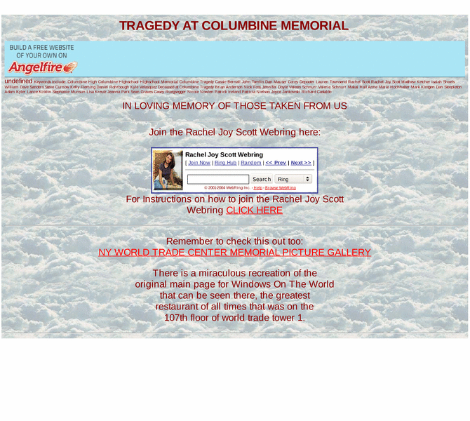

Previewing: TRAGEDY AT COLUMBINE MEMORIAL Previewing: TRAGEDY AT COLUMBINE MEMORIAL 
Use the left/right red arrow controls to navigate through this ring - Click the preview image to visit the member site.

Memorial created with the help from the Scott family to honor Rachel as well as the other victims that lost their lives at Columbine High on April 20 1999. Comprehensive and informative, the site contains extensive photos, artwork, poetry, and testimonials, as well as links to related sites and resources.
TRAGEDY AT COLUMBINE MEMORIAL owned by:
 wiccanhexx wiccanhexx
A member of the original webring since 04/23/2004.
|
|